Qwen = L2 候选，非真值。您逐条判定后把结果填到下方 g1_l3_results.json 模板或直接回复表内判定。
| # | 类型 | 期望 | 帧 | 机器标记 | L2候选 | 入选原因 | L3判定 | 备注 |
|---|---|---|---|---|---|---|---|---|
| 18 | S2-clean | clean | 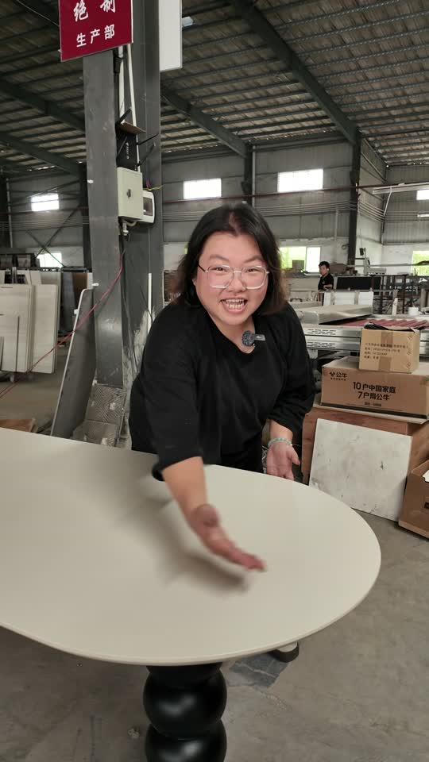 | {} | qwen: burned=ABSENT wm=ABSENT type=raw | s2_mixed_validation_clean_control | ||
| 19 | S2-clean | clean | {} | qwen: burned=ABSENT wm=ABSENT type=raw | s2_mixed_validation_clean_control | |||
| 20 | S2-clean | clean | 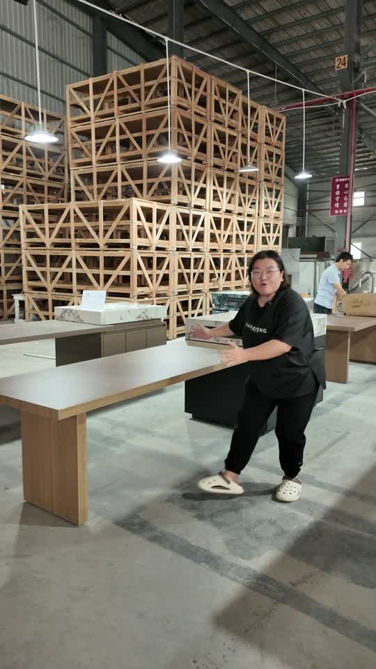 | {} | qwen: burned=UNCERTAIN wm=ABSENT type=raw | s2_mixed_validation_clean_control | ||
| 21 | S2-clean | clean | 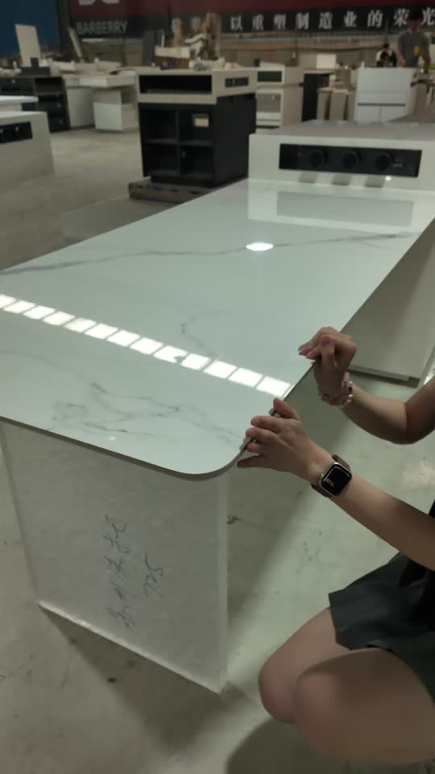 | {} | qwen: burned=ABSENT wm=ABSENT type=raw | s2_mixed_validation_clean_control | ||
| 35 | S2-clean | clean | 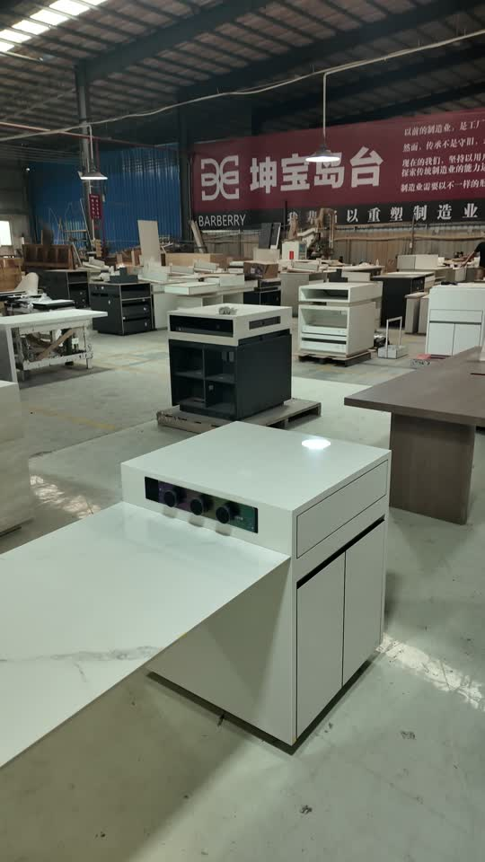 | {} | qwen: burned=PRESENT wm=ABSENT type=raw | qwen_false_clean_candidate | ||
| 54 | S1-flagged | dirty_or_review | 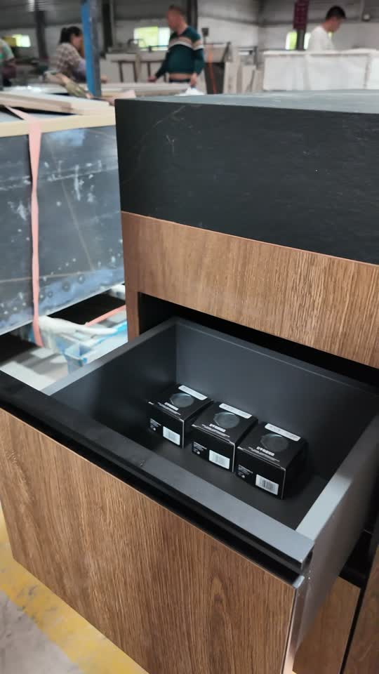 | {"burned": "PRESENT", "wm": "ABSENT", "unrel": "ABSENT", "oldt": "ABSENT"} | qwen: burned=UNCERTAIN wm=ABSENT type=semi | machine_flagged | ||
| 55 | S1-flagged | dirty_or_review | {"burned": "PRESENT", "wm": "ABSENT", "unrel": "ABSENT", "oldt": "ABSENT"} | qwen: burned=PRESENT wm=ABSENT type=finished | machine_flagged | |||
| 56 | S1-flagged | dirty_or_review | 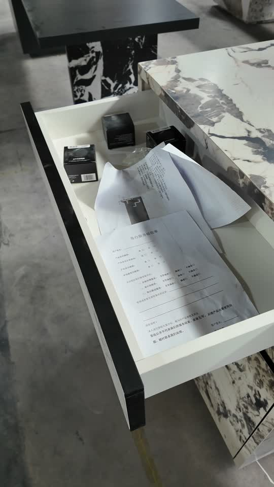 | {"burned": "PRESENT", "wm": "ABSENT", "unrel": "ABSENT", "oldt": "ABSENT"} | qwen: burned=PRESENT wm=ABSENT type=raw | machine_flagged | ||
| 57 | S1-flagged | dirty_or_review | {"burned": "PRESENT", "wm": "ABSENT", "unrel": "ABSENT", "oldt": "ABSENT"} | qwen: burned=PRESENT wm=ABSENT type=raw | machine_flagged | |||
| 58 | S1-flagged | dirty_or_review | {"burned": "PRESENT", "wm": "ABSENT", "unrel": "ABSENT", "oldt": "ABSENT"} | qwen: burned=PRESENT wm=ABSENT type=finished | machine_flagged | |||
| 59 | S1-flagged | dirty_or_review | {"burned": "PRESENT", "wm": "ABSENT", "unrel": "ABSENT", "oldt": "ABSENT"} | qwen: burned=PRESENT wm=ABSENT type=finished | machine_flagged | |||
| 60 | S2-flagged | dirty_or_review | 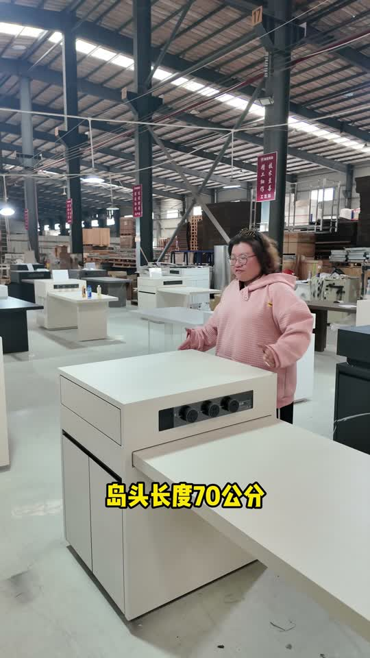 | {"burned": "PRESENT", "wm": "ABSENT", "unrel": "ABSENT", "oldt": "ABSENT"} | qwen: burned=PRESENT wm=ABSENT type=raw | machine_flagged | ||
| 61 | S2-flagged | dirty_or_review | {"burned": "PRESENT", "wm": "ABSENT", "unrel": "ABSENT", "oldt": "ABSENT"} | qwen: burned=PRESENT wm=ABSENT type=raw | machine_flagged | |||
| 62 | S2-flagged | dirty_or_review | {"burned": "PRESENT", "wm": "ABSENT", "unrel": "ABSENT", "oldt": "ABSENT"} | qwen: burned=PRESENT wm=ABSENT type=raw | machine_flagged | |||
| 63 | S2-flagged | dirty_or_review | 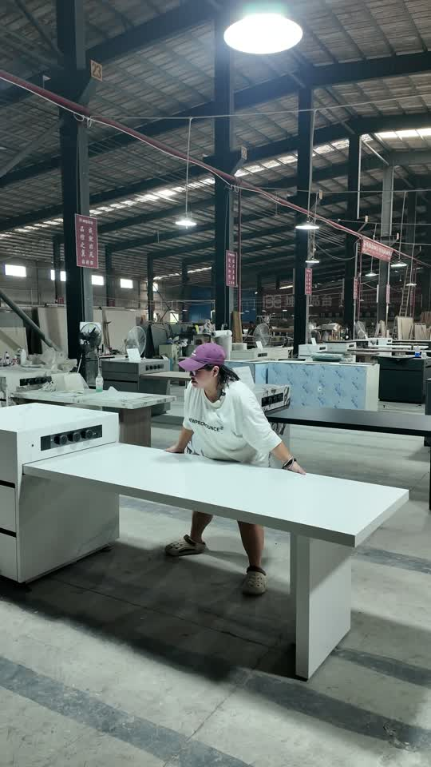 | {"burned": "ABSENT", "wm": "PRESENT", "unrel": "ABSENT", "oldt": "ABSENT"} | qwen: burned=UNCERTAIN wm=ABSENT type=raw | machine_flagged | ||
| 64 | S2-flagged | dirty_or_review | {"burned": "PRESENT", "wm": "ABSENT", "unrel": "ABSENT", "oldt": "ABSENT"} | qwen: burned=UNCERTAIN wm=ABSENT type=semi | machine_flagged | |||
| 65 | S2-flagged | dirty_or_review | {"burned": "PRESENT", "wm": "ABSENT", "unrel": "ABSENT", "oldt": "ABSENT"} | qwen: burned=PRESENT wm=ABSENT type=raw | machine_flagged | |||
| 66 | S2-flagged | dirty_or_review | {"burned": "PRESENT", "wm": "ABSENT", "unrel": "ABSENT", "oldt": "ABSENT"} | qwen: burned=PRESENT wm=ABSENT type=raw | machine_flagged | |||
| 67 | S2-flagged | dirty_or_review | {"burned": "PRESENT", "wm": "ABSENT", "unrel": "ABSENT", "oldt": "ABSENT"} | qwen: burned=PRESENT wm=ABSENT type=raw | machine_flagged | |||
| 68 | S4-flagged | dirty_or_review | 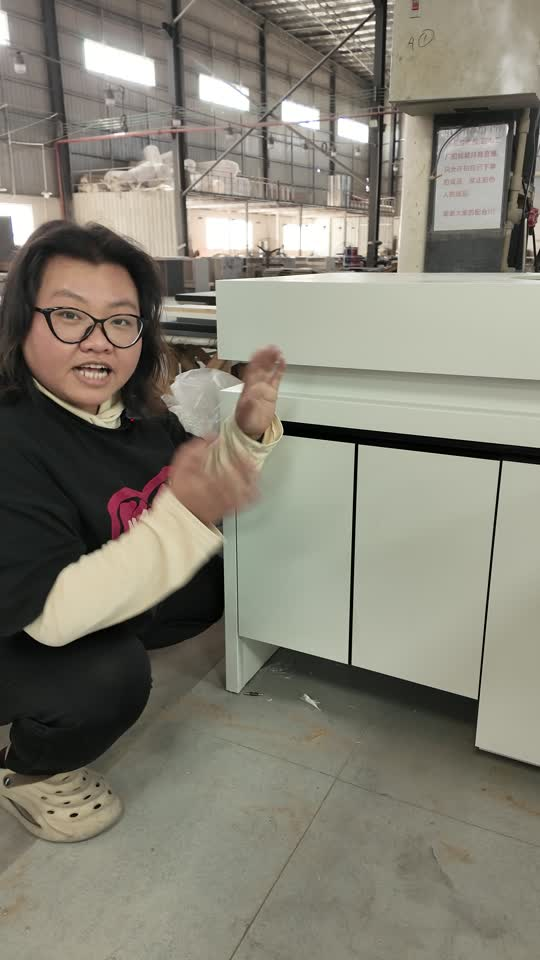 | {"burned": "ABSENT", "wm": "ABSENT", "unrel": "PRESENT", "oldt": "ABSENT"} | qwen: burned=UNCERTAIN wm=ABSENT type=raw | machine_flagged | ||
| 69 | S4-flagged | dirty_or_review | 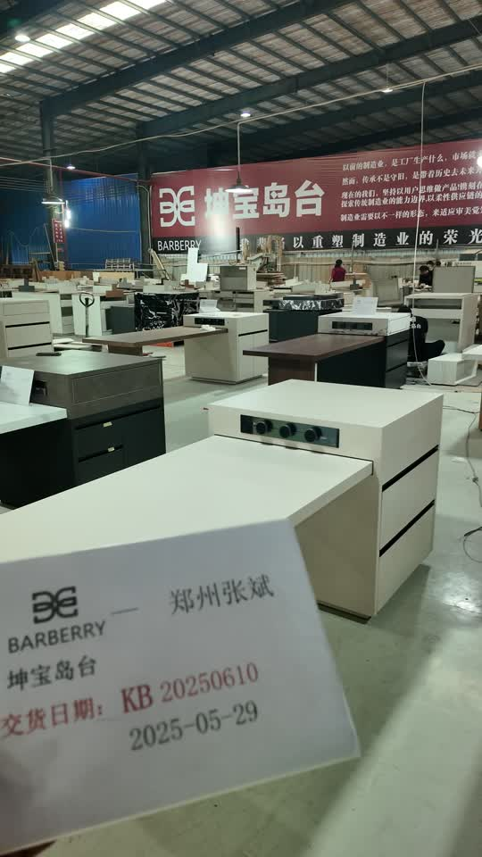 | {"burned": "PRESENT", "wm": "ABSENT", "unrel": "ABSENT", "oldt": "UNCERTAIN"} | qwen: burned=PRESENT wm=ABSENT type=raw | machine_flagged | ||
| 70 | S4-flagged | dirty_or_review | {"burned": "PRESENT", "wm": "ABSENT", "unrel": "ABSENT", "oldt": "ABSENT"} | qwen: burned=PRESENT wm=ABSENT type=raw | machine_flagged | |||
| 71 | S4-flagged | dirty_or_review | 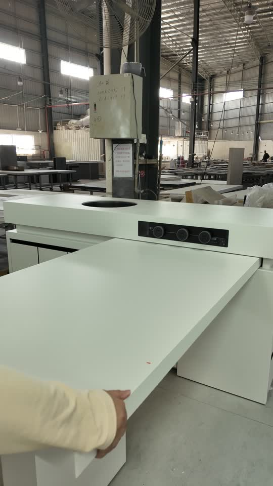 | {"burned": "ABSENT", "wm": "ABSENT", "unrel": "PRESENT", "oldt": "ABSENT"} | qwen: burned=UNCERTAIN wm=ABSENT type=semi | machine_flagged | ||
| 72 | S4-flagged | dirty_or_review | {"burned": "PRESENT", "wm": "ABSENT", "unrel": "ABSENT", "oldt": "ABSENT"} | qwen: burned=UNCERTAIN wm=ABSENT type=raw | machine_flagged | |||
| 73 | S4-flagged | dirty_or_review | {"burned": "PRESENT", "wm": "ABSENT", "unrel": "ABSENT", "oldt": "ABSENT"} | qwen: burned=PRESENT wm=ABSENT type=raw | machine_flagged | |||
| 74 | S4-flagged | dirty_or_review | 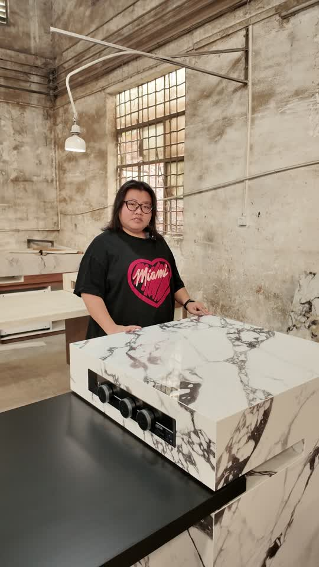 | {"burned": "PRESENT", "wm": "ABSENT", "unrel": "ABSENT", "oldt": "ABSENT"} | qwen: burned=PRESENT wm=ABSENT type=finished | machine_flagged | ||
| 75 | S4-flagged | dirty_or_review | {"burned": "PRESENT", "wm": "ABSENT", "unrel": "ABSENT", "oldt": "ABSENT"} | qwen: burned=UNCERTAIN wm=ABSENT type=raw | machine_flagged | |||
| 82 | S5-negative | not_production_or_reference | 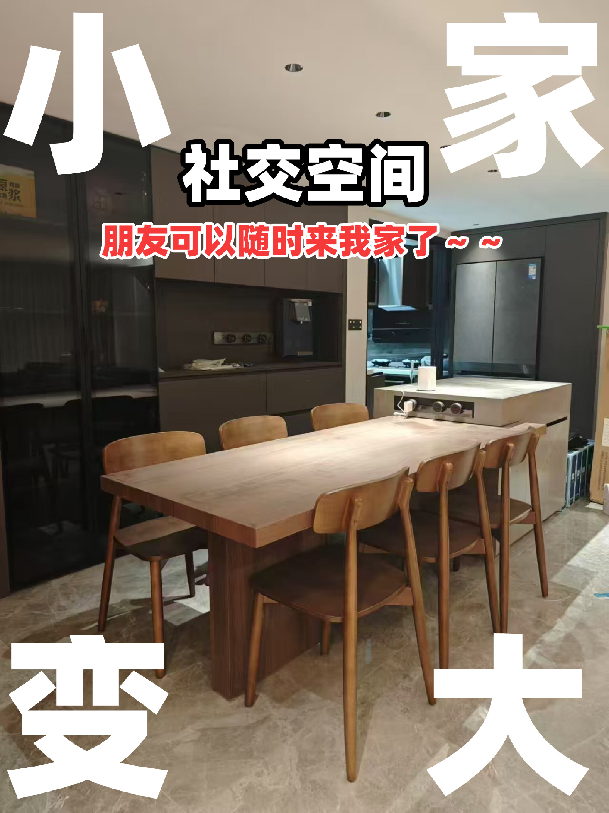 | {} | qwen: burned=PRESENT wm=ABSENT type=finished | reference_negative_control | ||
| 83 | S5-negative | not_production_or_reference | {} | qwen: burned=PRESENT wm=ABSENT type=finished | reference_negative_control | |||
| 84 | S5-negative | not_production_or_reference | 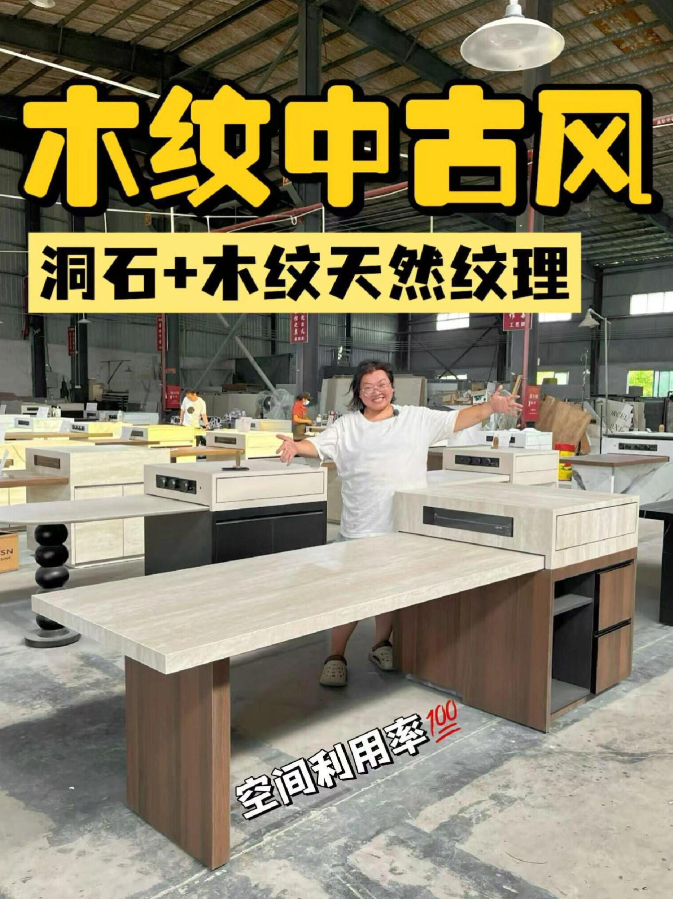 | {} | qwen: burned=PRESENT wm=ABSENT type=finished | reference_negative_control | ||
| 85 | S5-negative | not_production_or_reference | {} | qwen: burned=PRESENT wm=ABSENT type=finished | reference_negative_control | |||
| 86 | S5-negative | not_production_or_reference | 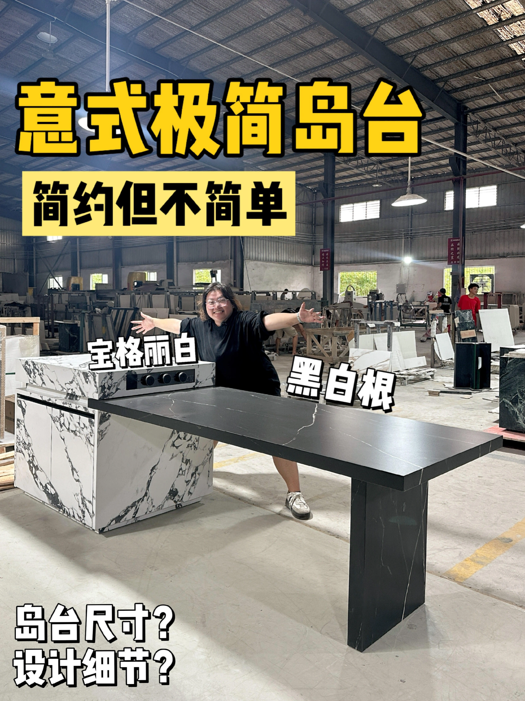 | {} | qwen: burned=PRESENT wm=ABSENT type=finished | reference_negative_control | ||
| 87 | S5-negative | not_production_or_reference | 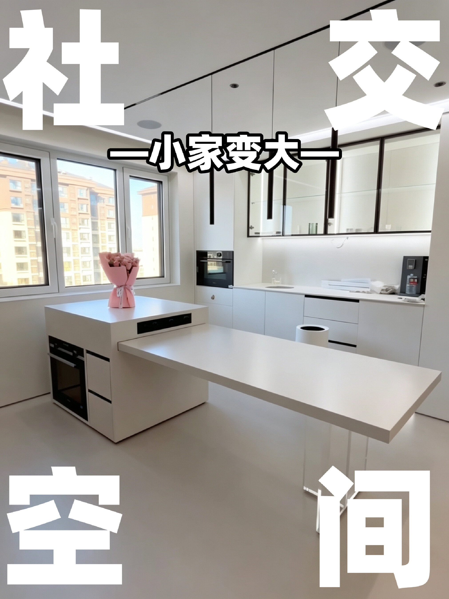 | {} | qwen: burned=PRESENT wm=ABSENT type=finished | reference_negative_control | ||
| 88 | B007-published | reference | {} | qwen: burned=PRESENT wm=PRESENT type=finished | reference_negative_control | |||
| 89 | B007-published | reference | {} | qwen: burned=PRESENT wm=PRESENT type=finished | reference_negative_control | |||
| 90 | B007-published | reference | {} | qwen: burned=PRESENT wm=PRESENT type=finished | reference_negative_control | |||
| 91 | B007-published | reference | {} | qwen: burned=PRESENT wm=PRESENT type=finished | reference_negative_control | |||
| 92 | B007-published | reference | 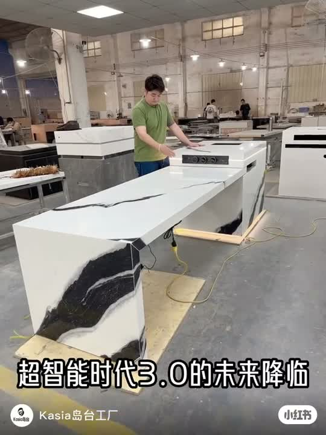 | {} | qwen: burned=PRESENT wm=PRESENT type=finished | reference_negative_control | ||
| 93 | B007-published | reference | {} | qwen: burned=PRESENT wm=PRESENT type=finished | reference_negative_control | |||
| 94 | S4-noOCR-boundary | uncertain_review | 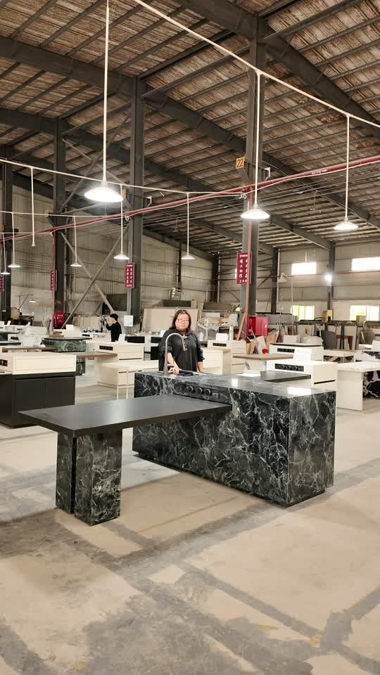 | {} | qwen: burned=UNCERTAIN wm=ABSENT type=raw | no_ocr_boundary | ||
| 95 | S4-noOCR-boundary | uncertain_review | 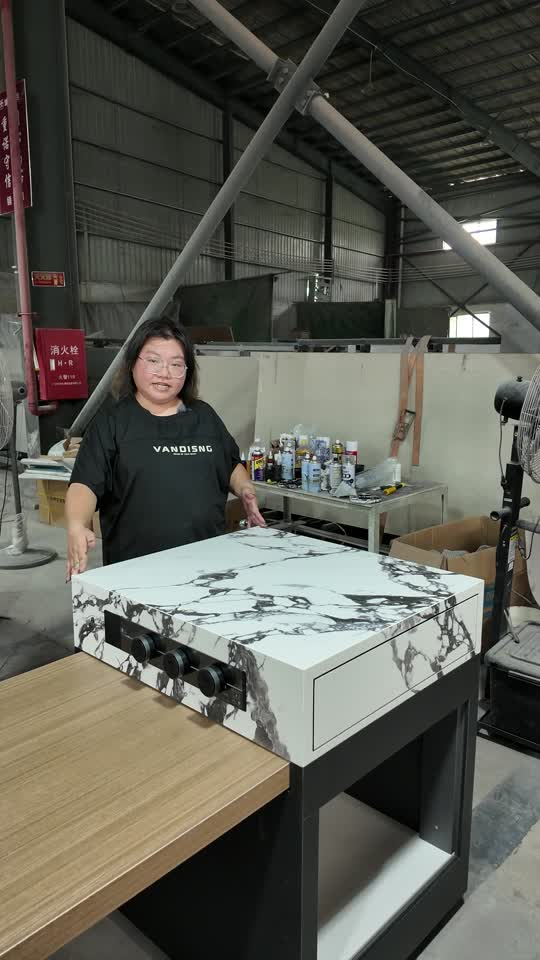 | {} | qwen: burned=PRESENT wm=ABSENT type=semi | no_ocr_boundary | ||
| 96 | S4-noOCR-boundary | uncertain_review | {} | qwen: burned=UNCERTAIN wm=ABSENT type=raw | no_ocr_boundary | |||
| 97 | S4-noOCR-boundary | uncertain_review | 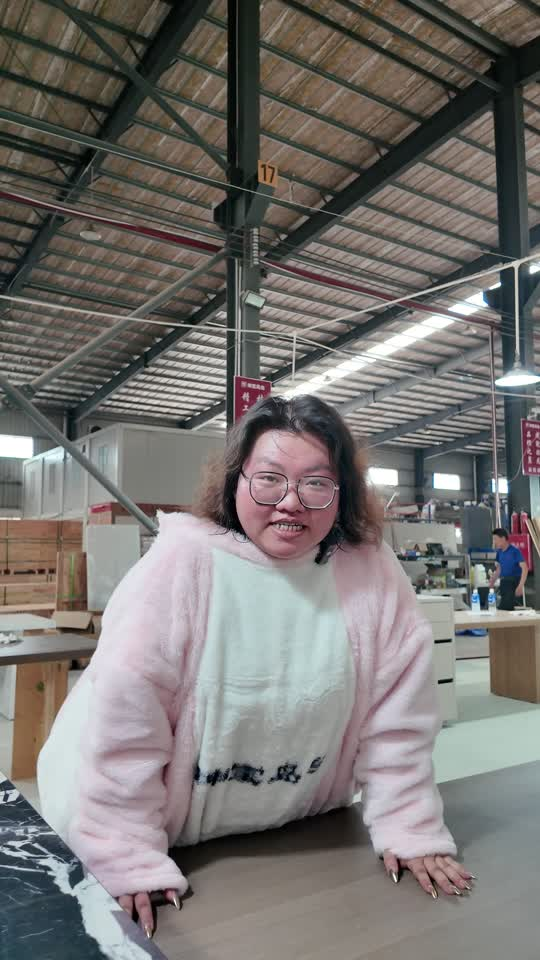 | {} | qwen: burned=UNCERTAIN wm=ABSENT type=raw | no_ocr_boundary | ||
| 98 | S4-noOCR-boundary | uncertain_review | 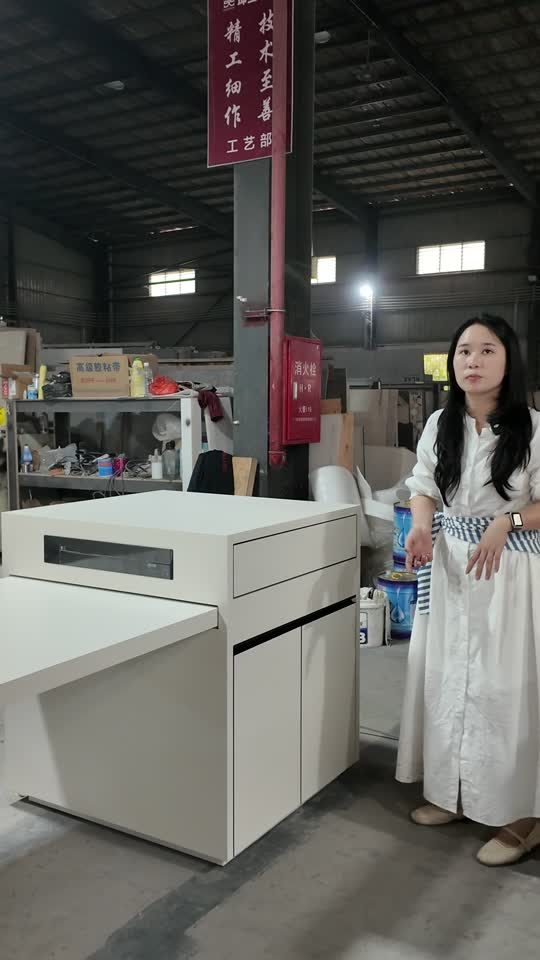 | {} | qwen: burned=UNCERTAIN wm=ABSENT type=raw | no_ocr_boundary | ||
| 99 | S4-noOCR-boundary | uncertain_review | 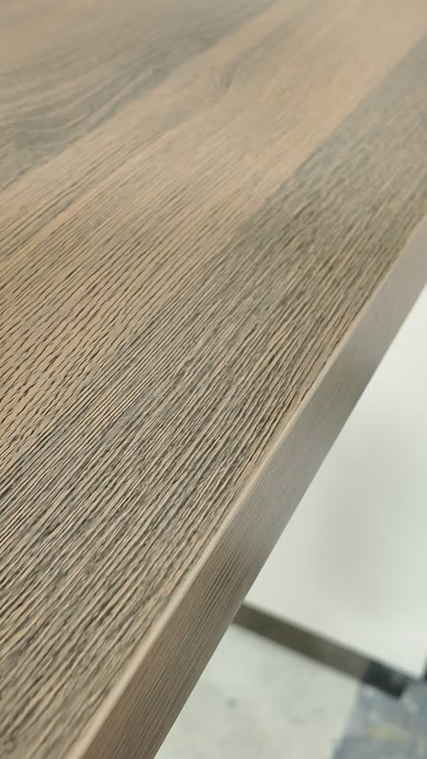 | {} | qwen: burned=UNCERTAIN wm=ABSENT type=raw | no_ocr_boundary |
重点必判：idx35（唯一 false-clean 候选，"坤宝岛台"字样）→ 若确认为烧录/品牌字幕，机器检测需扩围（G1 修复项）。